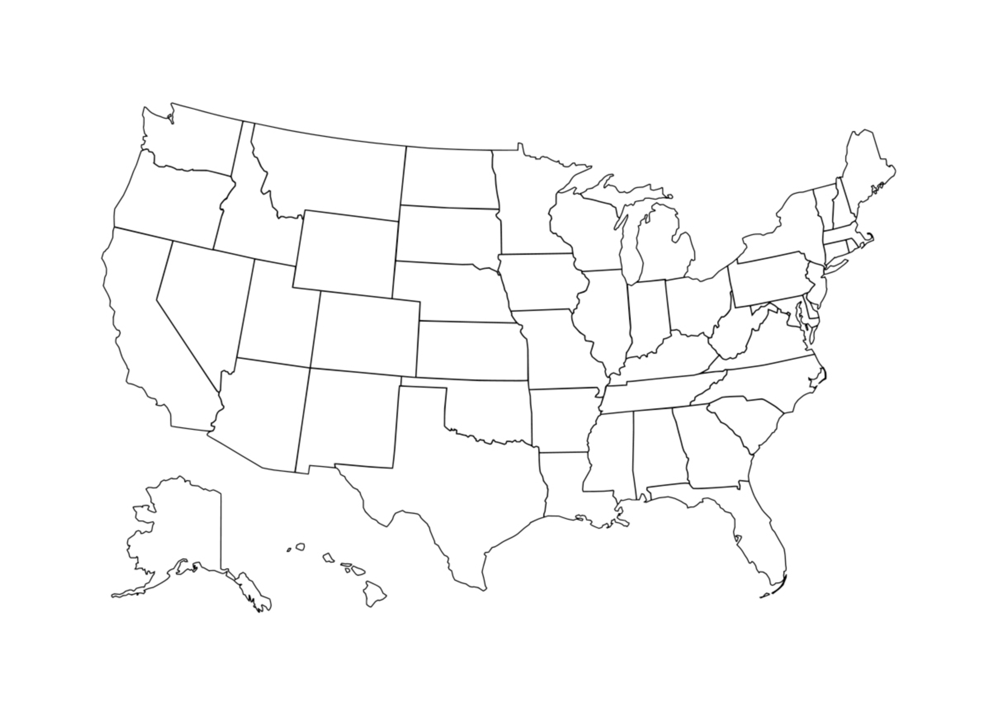
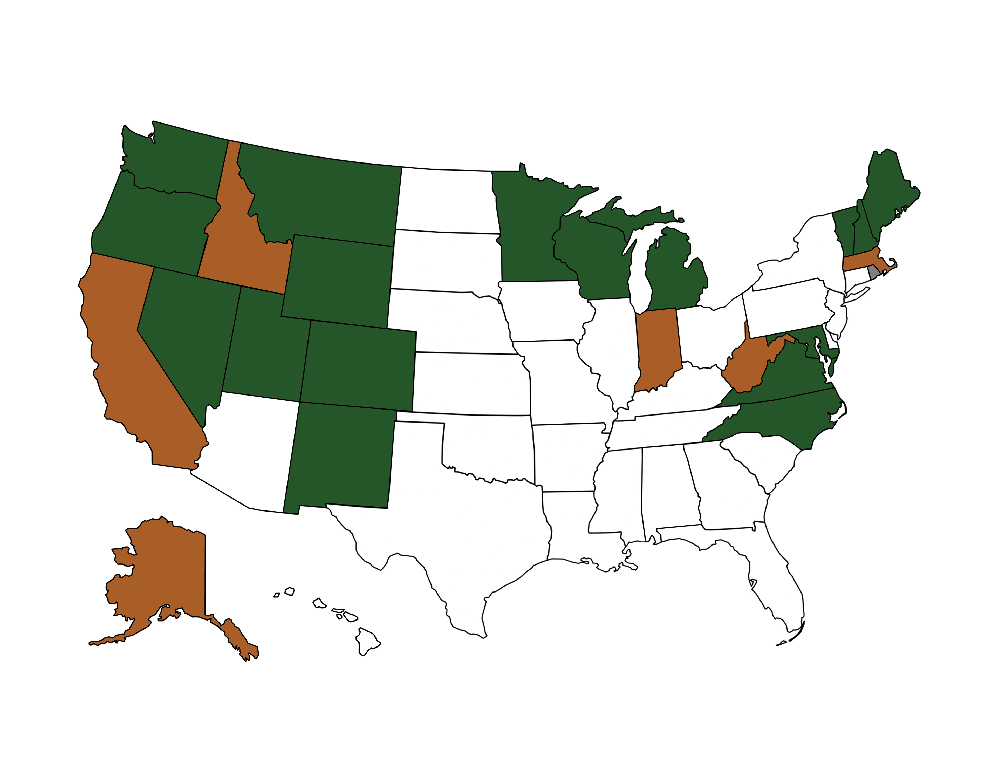
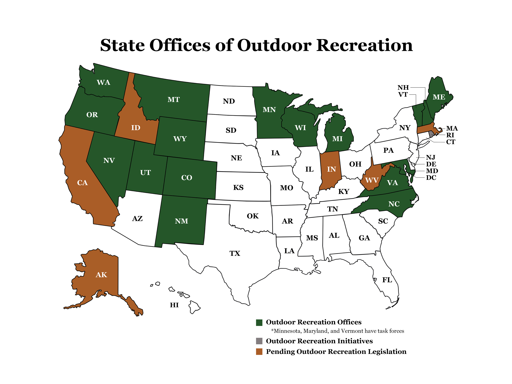

RECREATION



Project
Create a map that displays the current U.S. states with offices of outdoor recreation, pending outdoor recreation legislation and outdoor recreation task forces.
Programs
Adobe Photoshp and Adobe Illustrator
Process
Make a blank map of the United States. Fill in individual states that fit the outdoor recreation criteria, coloring each according to the legend. Create a title and fill in each state with its corresponding abbreviation.